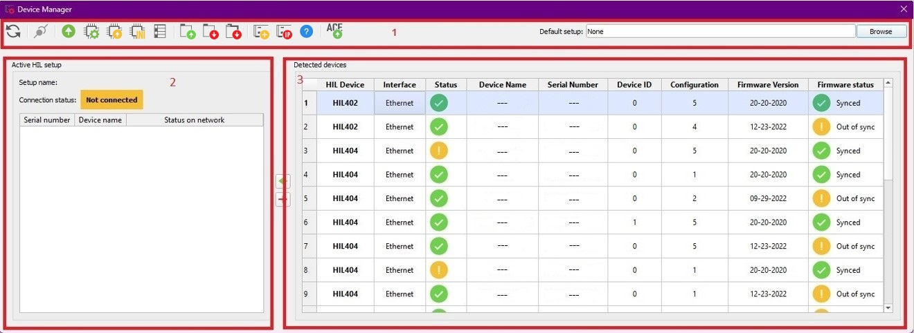
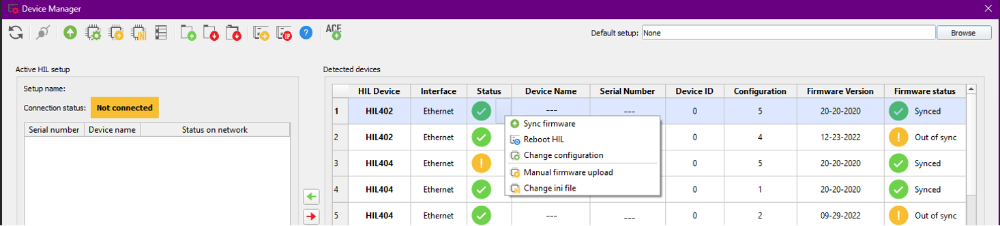
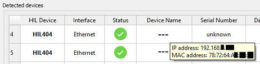
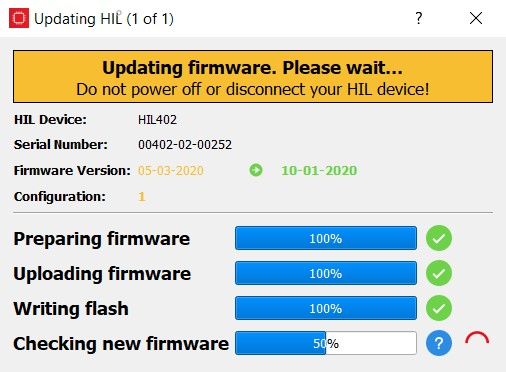
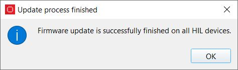
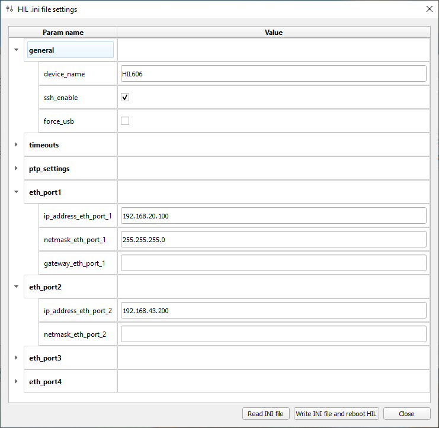

Device Manager
Device Manager is used to create, manipulate, and activate HIL device setups.
Device Manager Overview
Device Manager is a tool used for defining, manipulating, loading, and deploying HIL device setups to an instance Typhoon HIL Control Center as well as for updating and configuring HIL device firmware. A HIL setup is a set of devices which can be connected (activated) and used by Typhoon HIL Control Center. It is globally visible to instance of Typhoon HIL Control Center and all accompanying tools. Both USB and Ethernet connected devices are supported.

- The following table describes the possible Device Manager actions performed
using the icons show in Box 1 of Figure 1:
Table 1. Device Manager actions Action icon Description Perform detection of HIL devices (USB or Ethernet). Set HIL devices listed in Active HIL setup to be busy for other users on the network (Ethernet only). Open existing HIL setup file. Save HIL setup to a file. Save HIL setup under a new file name. Add device manually to the current setup using its serial number. Add HIL devices by IP address if network auto-detection fails for any reason. Select the desired HIL device and click on this action. Device Manager will find the appropriate firmware and start the update process automatically. Additional information on how this is performed is in the Syncing HIL Firmware in Device Manager section. Select the desired HIL device and click on this action. Device Manager will show the available configurations for the selected device, from which you can choose one. Select the desired HIL device and click on this action. Device Manager will ask you for the path to the desired firmware file that you want to upload to the device. To change device settings, select the desired HIL device and click on the Actions menu, then click on the Change device INI file. More information about available parameters for INI files, is in the HIL INI file section. Open Device Configuration Table Access the ACE firmware update tool. Additional information on how the firmware update is performed can be found in the Syncing ACE Firmware in Device Manager section. - Active HIL setup
Located on the left side of the Device Manager dialog (Box 2 of Figure 1). It allows one or more HIL devices to be added to the HIL setup from the Detected devices UI part (which is located to the right). If this list is empty, Typhoon HIL Control Center will use an implicit HIL setup (i.e. the first compatible device for your model that it finds). Active HIL setup will show a setup name, connection status, and a list of HIL devices in it. Devices are added/removed using the arrow buttons between the Active HIL setup and the Detected devices.
- Detected devices
Lists all detected HIL devices along with their information (Box 3 of Figure 1). This is the pool from which devices can be added to HIL setup. Each HIL device will display their current status via the icons shown below:
Table 2. Meaning of HIL device status icons Status icon Description HIL device is available. HIL device is available only for you (user). HIL device is busy. HIL device is not on the network. Right clicking on a HIL device will allow you to perform one of the following actions specific to that device (Figure 2): syncing or manually updating the device firmware, rebooting the HIL device, changing the device configuration, or changing the INI file.
Figure 2. Device Manager context menu 
Hovering over a specific HIL device in the Detected devices window will reveal its IP address and MAC address.
Figure 3. IP address and MAC addresses are visible in hover text 
Syncing HIL Firmware in Device Manager
Device Manager allows you to automatically upgrade firmware on multiple HIL devices and customize their device settings. All device firmware files are packed together with the Typhoon HIL Control Center installation and an additional firmware download is not required.
Device Manager lets you either start the upgrade process on the desired device or, if your firmware is up to date, change your firmware configuration. Updating multiple connected devices of the same type is also possible; the Device Manager will update them sequentially, one at a time.
Perform the firmware upgrade procedure by following the steps below:
- Power up and connect the HIL device
Open Device Manager. Upon start, Device Manager will automatically detect all connected HIL devices and show their firmware status, as described in Table 3
Table 3. Meaning of firmware status icons Status icon Description Firmware is synced with the currently opened Typhoon HIL software installation. Firmware is out of sync with currently opened Typhoon HIL Control Center software. Firmware version may be older or newer than the THCC compatible version. Select the desired HIL device and click on the Sync Firmware button (). Device Manager will find the appropriate firmware and start the update process automatically
Note: Sync Firmware will search for firmware files in the following locations:- Installation folder/typhoon/apps/firmware_files
- %LOCALAPPDATA%\typhoon\firmware_files
- Remote download from the Typhoon HIL Subscription portal.
Firmware update progress for each selected device is shown in a separate window

The firmware upgrade or configuration change procedure can take more than a minute to complete. After updates are finished on all devices, an appropriate message is shown.

Syncing ACE Firmware in Device Manager
- Sync firmware - Automatically downloads and uploads the firmware file to the connected ACE card
- Manual Firmware Upload - Allows for manual selection of a firmware file for the ACE card before uploading it
Updating the firmware is only supported for 1 ACE card at a time.
HIL INI file
The HIL ini file dialog is shown in a separate window (Figure 4).

Available parameters in the HIL.ini file settings are as follows:
| Parameter | Default value | Available from release | Description |
|---|---|---|---|
| device_name | - | 2020.3 | Device name displayed in Device manager. If left empty, the serial number is displayed as the device name. |
| ip_address_eth_port_1 | - | 2020.3 | If this parameter is left empty, the HIL tries to automatically acquire an IP address over DHCP. If DHCP fails, the HIL sets 192.168.42.200 as the default IP address. |
| netmask_eth_port_1 | 255.255.255.0 | 2021.1 | |
| gateway_eth_port_1 | - | 2021.2 | |
| ip_address_eth_port_2 | 192.168.43.200 | 2024.2 | Assign an IP address to HIL ethernet port 2. |
| netmask_eth_port_2 | - | 2024.2 | |
| ip_address_eth_port_3 | 192.168.44.200 | 2024.2 | Assign an IP address to HIL ethernet port 3. |
| netmask_eth_port_3 | - | 2024.2 | |
| ip_address_eth_port_4 | 192.168.45.200 | 2024.2 | Assign an IP address to HIL ethernet port 4. |
| netmask_eth_port_4 | - | 2024.2 | |
| force_usb | false | 2021.1 | If enabled, the HIL mandates a USB connection. If left disabled, the HIL will try to initialize USB on boot up, and if that fails, an Ethernet connection is used. |
| usb_init_timeout | 3 | 2021.1 | Timeout for initializing a USB connection. In case of USB issues or if USB power saving modes are enabled, it is recommended to increase this timeout. |
| heartbeat_timeout | 10 | 2021.1 | Timeout used when checking if there is a live Ethernet connection with THCC. If the local network is severely congested and you encounter a loss of connection with the HIL, it is recommended to increase this timeout. |
| watchdog_enable | true | 2021.2 | If enabled, the HIL automatically reboots if a signal processing application fails and locks up the HIL. |
| ptp_enable | false | 2023.2 | If enabled, the HIL device system clock can be synchronized using PTP protocol |
| ptp_settings |
--time_stamping=software --clientOnly=1 --priority1=255 --priority2=255 --domainNumber=0 --delay_mechanism=P2P --logAnnounceInterval=0 --logSyncInterval=0 --logMinPdelayReqInterval=0 --announceReceiptTimeout=3 |
2023.2 | Options used when enabling the PTP service on a HIL device. PTP is based on the Linux ptp4l library and the options can be changed according to the library specification. |